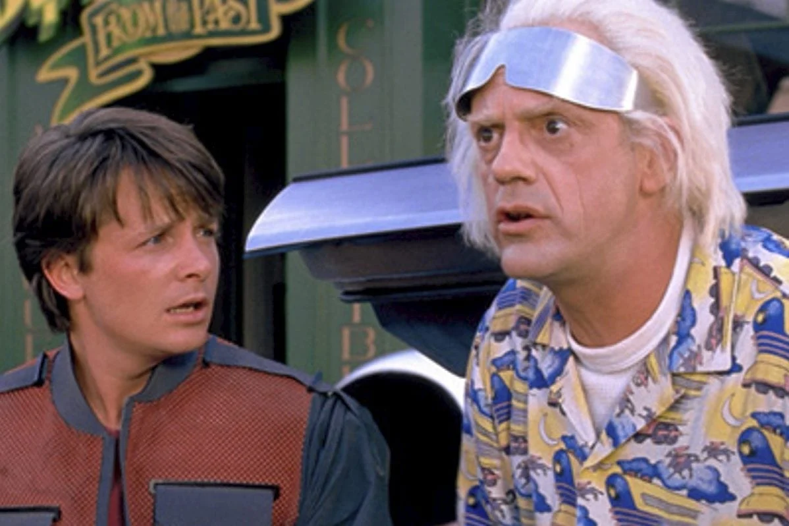
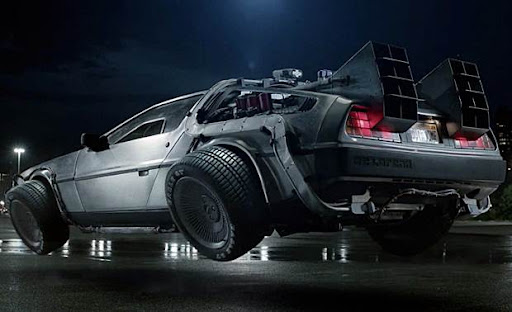
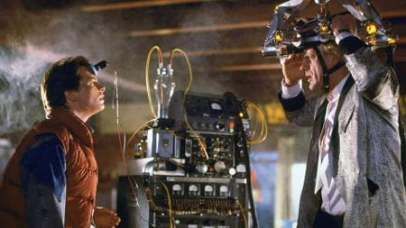
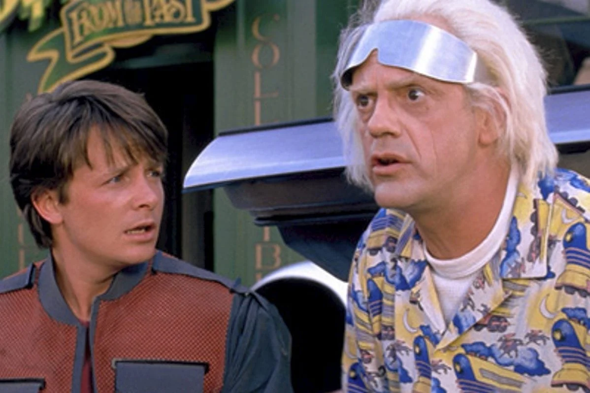
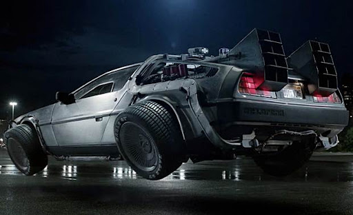
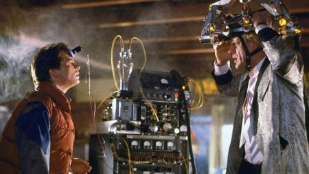
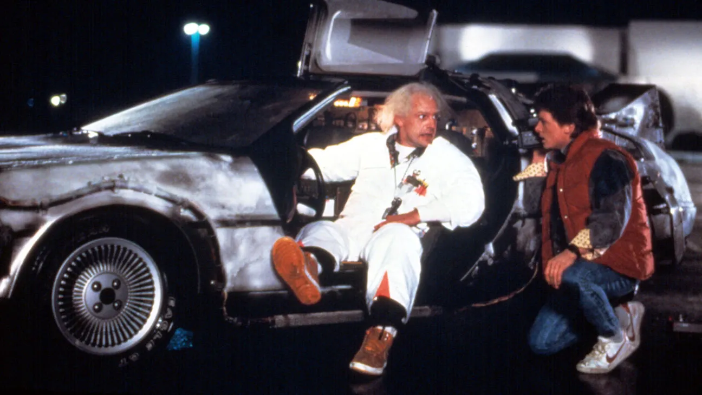
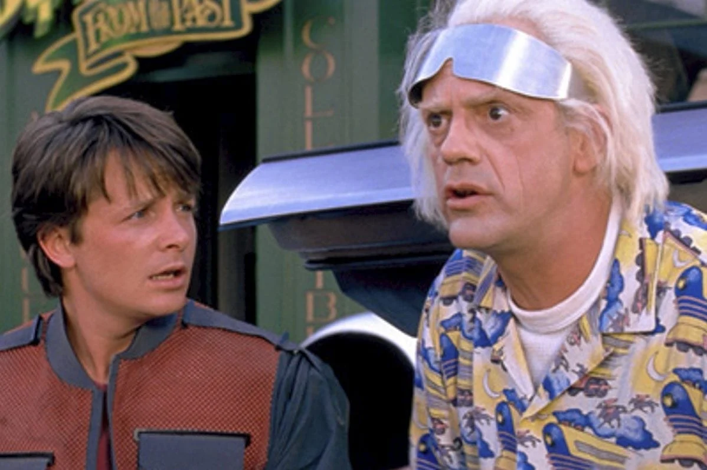
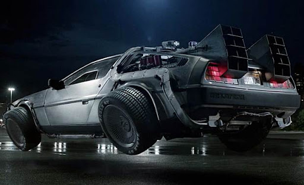
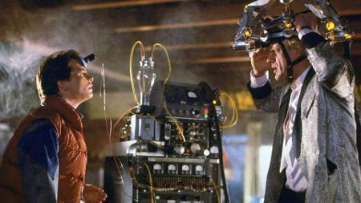

Seção de Fotos
Algumas fotos de cenas encontradas no filme
 





Enzo Cassol De Déa
o filme conta a história de um adolescente que acidentalmente viaja no tempo para 1955 e precisa fazer com que seus pais se apaixonem novamente para garantir sua própria existência no futuro.
Algumas fotos de cenas encontradas no filme



O diretor do De volta para o futuro é Robert Zemeckis
Marty McFly está sendo representada pelo Michael J. Fox
Emmett Brown pelo Christopher Lloyd
Biff Tannen pelo Thomas F. Wilson
O filme foi lançado em 25 de dezembro de 1985
Um jovem chamado Marty McFly acidentalmente ativa uma máquina do tempo construída por um cientista excêntrico chamado Dr. Emmett Brown. A máquina é um Delorean modificado, e Marty acaba sendo transportado de volta aos anos 1950. Lá, ele se encontra com sua própria mãe, Lorraine Baines, antes mesmo de ela se casar com seu pai. O problema é que Lorraine se apaixona por Marty, o que coloca em risco a própria existência dele. Se ela continuar apaixonada por ele, isso alteraria todo o futuro, forçando Marty a desempenhar o papel de cupido entre seus próprios pais. O filme é uma deliciosa mistura de humor, aventura e viagem no tempo, e nos leva a refletir sobre as consequências de nossas ações no passado e no futuro. Uma verdadeira obra-prima que continua encantando gerações até hoje
Enzo
2°C